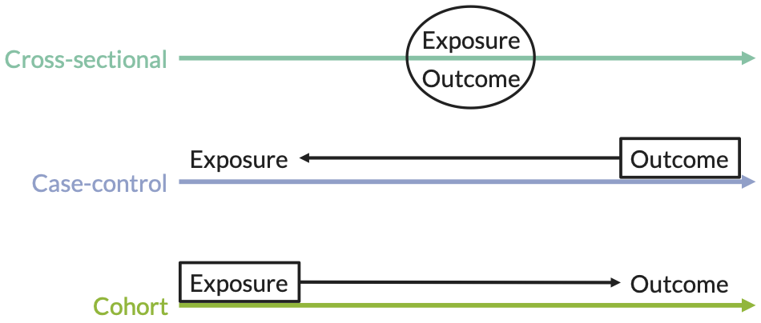

2 Study design
Material adapted from slides by Jack Jennings, PhD, MPH

Figure 2.1: Comparison of study designs
2.1 Cross-sectional studies
- Measure existing disease and current exposure levels at one point in time
- Sample without knowledge of exposure or disease
- Ex. prevalence studies
2.1.1 Advantages
- Often early study design in a line of investigation
- Good for hypothesis generation
- Relatively easy, quick and inexpensive … depends on question
- Examin multiple exposures or outcomes
- Estimate prevalence of disease and exposures
2.1.2 Disadvantages
- Cannot infer causality
- Prevalent vs. incident disease
- May miss latent disease
- May be subject to recall bias
2.1.3 Example
Research question
- Determine whether there are differences in rates of stroke and myocardial infarction by gender and race among patients
Hypothesis
- There will be differences in rates of stroke by gender and race
- There will be differences in rates of myocardial infarction by gender and race
2.2 Case-control studies
- Identify individuals with existing disease/s and retrospectively measure exposure
Figure 2.2: Case-control schematic
2.2.1 Advantages
- Good design for rare, chronic and long latency diseases
- Relatively inexpensive (population size and time)
- Allows for the examination of multiple exposures
- Estimate odds ratios
- Hospital-based studies and outbreaks
2.2.2 Disadvtanges
- Multiple outcomes cannot be studies
- Recall bias
- Sampling bias
- Cannot calculate prevalence, incidence, population relative risk or attributable risk
- Beware of reverse causation
2.3 Cohort studies
- Identify exposed and unexposed individuals and follow them over time measuring outcomes/s (prospective)

Figure 2.4: Cohort study schematic
2.3.1 Prospective vs retrospective cohort studies
- Prospective
- Study begins before or after exposure but always before collection of the outcome measure
- Retrospective
- Study begins after collection of the outcome measure

Figure 2.5: Prospective vs retrospective cohort study
2.3.2 Advantages
- Measure population-based incidence
- Relative risk and risk ratio estimations
- Rare exposures
- Temporality
- Less likely to be subject to biases (recall and selection as compared to case-control)
- Possible to assess multiple exposures and/or outcomes
2.3.3 Disadvantages
- Impractical for rare diseases and diseases with a long latency
- Expensive
- Often large study populations
- Time of follow-up
- Biases
- Design: Sampling, ascertainment, and observer
- Study population: Non-response, migration, and loss-to-follow-up
2.3.4 Example
Research question
- Determine whether circulating biomarkers (i.e., C-reactive protein; exhaled breath condensate - pH, hydrogen peroxide, 8-isoprostene, nitrie, nitrate levels; sputum - TNF-\(\alpha\), IL-6, UK-8, IL-1\(\beta\), neutrophil elastase; and fractional exhaled nitric oxide) predict individuals who will benefit from initiation of antibiotic therapy for the treatment of a mild decrease in FEV1
Hypothesis
- Biomarkers at the time of presentation with a mild increase in pulmonary symptoms or small decline in FEV1 can be used to identify which patients require antobiotics to recover.
Figure 2.6: Cohort study example
2.3.5 Important features
- How much selection bias was present?
- Were only people at risk of the outcome included?
- Was the exposure clear, specific, and measurable?
- Were the exposed and unexposed similar in all important respects except for the exposure?
- Were steps taken to minimize information bias?
- Was the outcome clear, specific, and measurable?
- Was the outcome identified in the same way for both groups?
- Was the determination of the outcome made by an observer blinded to treatment?
- How complete were the follow-up of both groups?
- What efforts were made to limit loss-to-follow-up?
- Was loss-to-follow-up similar in both groups?
- Were potential confounding factors sought and controlled for in the study design or analysis?
- Did the investigators anticipate and gather information on potential confounding factors?
- What methods were used to assess and control for confounding?
2.4 Randomized controlled trials (RCTs)
- Experimental: exposure is assigned
- Randomization assignment
- Random allocation of exposure or treatment
- Results (or should result) in two equivalent groups on all measured and unmeasured confounders
- Gold standard for causal inference
2.4.2 Disadvantages
- Intent-to-treat
- Loss-to-follow-up
- Randomization issues
- Not all exposures can be “treatments,” i.e., are assignable
- Some exposures/treatments cannot be ethically randomized
2.4.3 Example
Research question
- To determine whether resident’s attitude and skills in diabetes management and counseling change after a curricular intervention
- To determine whether patient outcomes related to diabetes (e.g., weight, smoking status) change after a curricular intervention among residents
Hypothesis
- Attiudes and skills related to diabetes management and counseling will improve among residents after a curricular intervention
- Fewer patients with diabetes will smoke over time after curricular intervention among residents